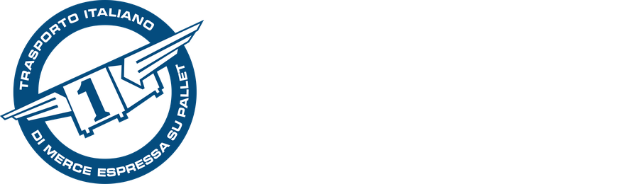

Restyling oneexpress.it · ottobre 2026
Nuova homepage One Express:
tre direzioni pronte per ExpeditorBlue
Ogni proposta usa le foto reali della library, il logo su due righe senza «il pallet espresso», la palette del Brand Book 2026 e gli stessi testi riscritti per SEO, GEO e lead generation. Ogni sezione corrisponde a un blocco del template (tabella in basso), così si ritaglia e si monta senza rifare il tema.
Blu Express
La più fedele a ExpeditorBlue homepage-2: topbar blu, hero fotografico con widget a schede (traccia, preventivo, tempi), griglia servizi, numeri, processo, FAQ.
- Tempo di implementazione minimo
- Look corporate, rassicurante
- Mega-menu bianchi a 3 colonne + card
Sportello digitale
Utility-first: le pagine più visitate (traccia, filiale, tempi, preventivo) diventano quattro grandi tasti nell'hero. Persone vere in primo piano, giallo come colore d'azione.
- Massima accessibilità delle top 15
- Contro gli aggregatori: preventivo in 3 passi
- Mega-menu con ricerca e scorciatoie
Il Primo
Editoriale e coraggiosa: fondo blu scuro elegante, titoli in MicroSquare corsivo, la torre di pallet «1» come manifesto. Racconta affiliati ed eventi, i temi che funzionano sui social.
- Massima distintività del brand
- Storytelling affiliati e Green Pallet
- Mega-menu scuri a pannello pieno
Logo su due righe (ricavato dai file ufficiali, senza payoff)



Header: versione due righe. Footer: versione completa con «il pallet espresso», come da Brand Book. Altezza digitale consigliata dal manuale: 120 px (header 64–72 px su desktop).
Palette Brand Book 2026
#1365A4
#FCDE15
#001E5A
#4287F5
#FFF185
#00A896
#606060
#F4F4F4
Tipografia: Heebo (titoli), Assistant (testi), MicroSquare Bold Italic solo per accenti display (proposta C). Il giallo non va mai usato come testo su bianco: solo come fondo di pulsanti con testo blu scuro (contrasto 13:1).
Mappa blocchi → template ExpeditorBlue (homepage-2)
| Blocco nuovo | Classe | Elemento del template |
|---|---|---|
| Topbar utility | .oe-topbar | Top bar (contatti, social, lingua) |
| Header + mega-menu | .oe-header .oe-mega | Header / main menu (Elementor mega menu) |
| Hero + widget | .oe-hero | Slider/hero + modulo tracking |
| Accessi rapidi | .oe-quick | Feature boxes sotto l'hero |
| Servizi | .oe-services | Services grid |
| Chi siamo + numeri | .oe-about .oe-stats | About + counters |
| Come funziona | .oe-process | Work process / steps |
| Preventivo | .oe-quote | Request a quote (Contact Form 7) |
| Settori | .oe-sectors | Industries / portfolio |
| Green Pallet | .oe-green | Call to action con immagine |
| Testimonianze | .oe-testimonials | Testimonials carousel |
| FAQ (GEO) | .oe-faq | Accordion + schema FAQPage |
| News | .oe-news | Latest news |
| Footer | .oe-footer | Footer widgets |
Le 15 pagine top hanno sempre almeno due accessi: topbar o tasti hero + mega-menu + footer. Il tracking (IT/EN/DE) è in testata in tutte le lingue.